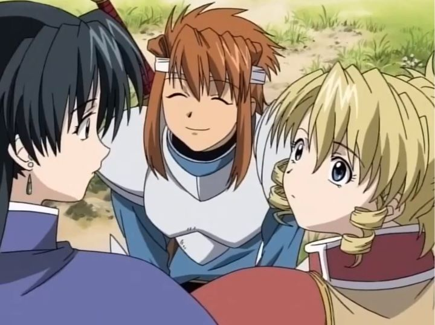

Studio Bones had a great year in 2003. Banking on the massive international anime hit "Fullmetal Alchemist," they also had the critically-acclaimed cult classic "Wolf's Rain." Not enough to keep them busy, they also had "Scrapped Princess," a show that you've likely never heard of or forgotten about. But that's not a bad thing: decades later, with Funimation's physical re-release, you now have a chance to travel back in time to see it as a brand new experience! And while it isn't perfect, it's a worthwhile experience to have.Set in a fantasy kingdom, Pacifica Casull is a princess born with a horrible prophecy: when she turns 16, she will bring about the destruction of the world. To prevent her death at the hands of the King and the Church, the Queen hides her away with another family. The show takes place when Pacifica is 15, travelling quietly with her foster brother and sister, Shannon and Raquel (a swordsman and wizard, respectively), fighting off the occasional group of bandits and royal guards, as rumors spread of the Scrapped Princess's survival. Will Pacifica be able to hide until she turns 16? Is there any truth to the prophecy, and will the world suffer for her survival? Surprisingly, the show presents itself as a comedy. 15-year-old Pacifica is a bit of a spoiled brat, thankful to her family for keeping her safe, but also whinning to eat (she loves egg omelettes) and take a bath. True to a brother-sister dynamic, Shannon often gets annoyed with Pacifica, cracking sarcastic jokes when he isn't trying to be cool. And Raquel is a little aloof, a powerful magic user, but occasionally destroying things when her magic goes wrong. When together, they don't have much to fear: when bandits threaten them on the road, Pacifica calls to Shannon, who sighs, takes a break from laundry, and cuts down the group in seconds. But not just a comedy: "Scrapped Princess" takes advantage of it's premise to make for some interesting character development and drama. Pacifica knows about the prophecy, and despite not having any powers to speak of, she wonders if there is any truth in it. Despite her family doing their best to defend her without killing, people do die around her because of who she is. Would the world be better off if she were dead? Even Shannon and Raquel, who would do anything to protect her, don't have any answers to her doubts. This makes for a good theme as the show takes an anthology-approach, traveling from one random town to the next, each with different customs and cultures that relate to the Church, each with different (but usually hostile) opinions towards the fabled Scrapped Princess. It reminded me a lot of "Kino's Journey," but with a larger cast of side-characters, that the show often revisits instead of treating as one-offs.I was impressed and engaged for the first half of the series. But then things take a drastic turn by episode 12 (out of 24). We get multiple episodes'-worth of spoken exposition to reveal the plot twist of the story, that goes far beyond a simple Church conspiracy, as previous episodes hinted at. Aliens? The past is really the future?! I won't spoil it in detail here, but I'll say while I appreciated the ambition of the twist, it felt like it came out of completely separate story, not making sense at all to the otherwise traditional RPG-fantasy world "Scrapped Princess" had. And that new context takes forefront focus, even adding unnecessary complications onto it, like a case of amnesia and separation that lasts several episodes.  The characters are still at the center of the show, even after this major twist down the road. Not just with the main three characters, but all the side characters they've met along the way. That helped keep the show enjoyable, even though it was disappointing to see such a strong story become so convoluted (with confusing character choices and a lackluster ending to boot). Ultimately, it impressed me more than it annoyed me: even today, most anime fails to nail the fundamentals that "Scrapped Princess" accomplishes in its story and characters.Art direction is inspired by traditional fantasy stories, with knight and traveler outfits coming out of other common designs from JRPG video games of that period. Generally, I liked most of the designs and think they age well today, altough Pacifica's blonde curly hair never seemed right, and a few other character designs (the character Zefiris as a prime example) look horribly dated. Animation holds up well enough, with a couple well-animated sword fights, but primarily, a lot of still frames that use the minimum amount of movement in each shot. Environments of grassy fields and sunsets look colorful and appropriate to the setting, but are as expected for a 2003 anime.Inspired by the Scottish highlands in both visuals and music, the soundtrack to "Scrapped Princess" is distinctive and enjoyable. The opening and ending themes are surprisingly catchy, and not being traditional J-POP tunes, I was happy to listen to them with every episode, rarely skipping through. The English dub holds up well too, with Kari Wahlgren and Crispin Freeman (Pacifica and Shannon) delivering strong performances that make up for some side-characters that only sound annoying due to their characterizations.I was impressed by "Scrapped Princess." It's a treat to discover an old show and enjoy it as if I was back in 2003. Most shows don't hold up well decades later, but I wouldn't hesitate to introducing "Scrapped Princess" to a friend. A confusing second-half of the story and some average-looking art prevents it from being a must-see classic, but I think fantasy-fans will want to go out of their way to find it. Even with a disappointing ending, as they say: "it's not the destination, it's the jouney that matters."
- "Ani" More reviews can be found at : https://2danicritic.github.io/ Previous review: review_School_Days Next review: review_Seitokai_Yakuindomo_(Season_1,_Season_2,_Movie_1)